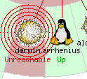

Nagios
Ce sera Nagios3 Sous debian Squeeze (Mais fonctionnel sous Lenny)
Sommaire
- 1 Install Nagios3
- 2 Usage
- 3 Tests
- 4 A vérifier au préalable
- 5 La Geek-solution
- 6 Visualisation seule
- 7 Surveillance de différents services
- 8 Debug
Install Nagios3
apt-get install nagios3 htpasswd -c /etc/nagios3/htpasswd.users nagiosadmin
Attention , nagiosamdin est l'user par défaut. Si vous choisissez un autre nom :
perl -pi -e 's/nagiosadmin/NOUVEAUNOM/g' /etc/nagios3/cgi.cfg
Modifier : /etc/nagios3/nagios.cfg
cfg_file=/etc/nagios3/objects/commands.cfg cfg_file=/etc/nagios3/objects/contacts.cfg cfg_file=/etc/nagios3/objects/timeperiods.cfg cfg_file=/etc/nagios3/objects/templates.cfg cfg_file=/etc/nagios3/objects/hostextinfo.cfg cfg_file=/etc/nagios3/objects/service.cfg cfg_file=/etc/nagios3/objects/hostgroups.cfg cfg_file=/etc/nagios3/objects/windows.cfg cfg_file=/etc/nagios3/objects/esx.cfg cfg_file=/etc/nagios3/objects/dtu-2.cfg #cfg_file=/etc/nagios3/objects/dtu.cfg cfg_file=/etc/nagios3/objects/wifi.cfg cfg_file=/etc/nagios3/objects/linux.cfg cfg_file=/etc/nagios3/objects/solaris.cfg cfg_file=/etc/nagios3/objects/openbsd.cfg cfg_file=/etc/nagios3/objects/switch.cfg cfg_file=/etc/nagios3/objects/printer.cfg
Localisations :
Les images
/usr/share/nagios3/htdocs/images/logos
mkdir objects touch objects/commands.cfg touch objects/contacts.cfg touch objects/timeperiods.cfg touch objects/templates.cfg touch objects/windows.cfg touch objects/switch.cfg touch objects/printer.cfg touch objects/service.cfg touch objects/hostgroups.cfg touch objects/wifi.cfg touch objects/linux.cfg touch objects/openbsd.cfg
C'est tout. Puis aller sur http://@IP/nagios
J'ai abandonné l'installation de centreon/Oréon, des usines à gaz..
Usage
Côté serveur, j'ai fait cette doc : [1] dont voici l'original :
Notez que se3 est un projet communautaire de serveur pour les lycées, collèges etc...
Comment surveiller à distance le bon fonctionnement du serveur se3 ?
Il est tout à fait possible de surveiller localement le serveur; c'est le rôle de l'interface d'alerte.
Merci à Mr Plouf pour cette précision.
Néanmoins, il peut être utile de faire reposer la surveillance du se3 sur une autre machine. Si vous avez de multiples serveurs, ça me semble même tout à fait indispensable.
Le choix du logiciel de surveillance est Nagios. Pour la métrologie on verra plus tard.
L'installation du serveur Nagios (version 3) n'est pas décrite ici.
J'ai délibérément fait le choix de passer un peu de temps à l'installation des prérequis sur le serveur se3 afin d'avoir un plus grand contrôle sur les tests et une meilleure sécurité.
Les tests seront donc effectués pour certains en local grâce aux capacités de check_by_ssh.
Le principe est de créer un utilisateur local se3 (user Unix, pas LDAP) qui fera les tests locaux en permettant ainsi de ne pas ouvrir nrpe ou nsca les modules de check distants de Nagios. Cet user renvoit les résultats des tests par un tunnel ssh au serveur Nagios.
Au final, vous aurez ça :
{kind=link}
Tests
Les tests actuellement disponibles sont
| Nom du test | Service testé | Test local/Distant |
| ApacheSe3 | Interface d'administration Se3 | Distant |
| Charge CPU | Etat des CPU | Local |
| DHCP | Etat du serveur DHCP | Distant |
| DisqueSe3 | Etat des partitions /var/se3, /var , /home | Local |
| LDAP | Annuaire en état | Distant |
| MySQL | Etat de la base MySQL | Local |
| SSH | Serveur SSH OK | Distant |
| TFTP | Le serveur TFTP tourne et un pxelinux.0 est disponible | Distant |
A vérifier au préalable
- Autoriser ICMP (les ping) sur le serveur se3 depuis le serveur Nagios
Client : La commande est à passer sur le serveur à surveiller
Nagios : La commande est à passer sur le serveur Nagios
Ajouter utilisateur Nagios
- Client Linux
adduser nagios
(N'importe quel mdp)
- Client OpenBSD
adduser nagios
(Shell = nologin)
Gérer le reboot du serveur Nagios
Nagios
L'utilisateur nagios existe dont le repertoire home est /var/lib/nagios
su nagios -c` ssh-keygen -t rsa -f /root/Nagios_id_rsa` Generating public/private rsa key pair. echo " #!/bin/bash cp /root/Nagios_id_rsa/* /var/run/nagios3/.ssh/ chown nagios.nagios /var/run/nagios3/.ssh/* logger -t NagiosBoot "Recopie des cles Nagios" " > /usr/script/clenagios.sh chmod +x /usr/script/clenagios.sh /usr/script/clenagios.sh
Maintenant, on fait en sorte que le nécessaire soit fait au reboot :
Copier ça dans /etc/init.d/clenagios
#!/bin/bash
case "$1" in
start)
# au démarrage
/usr/script/clenagios.sh
;;
stop)
# à l'arret
;;
*)
exit 3
;;
esac
/usr/script/clenagios.sh update-rc.d clenagios defaults 58
Générer les cles SSH
SE3
sudo -u nagios ssh-keygen -t rsa
N On vérifie la connexion : (Important, il faut accepter l'hôte une 1ère fois)
scp -P PORT_SSH /var/run/nagios3/.ssh/id_rsa.pub root@IP_SE3:/home/nagios/.ssh/authorized_keys sudo -u nagios ssh -p PORT_SSH nagios@IP_SE3 yes exit
SE3
chown nagios.nagios /home/nagios/.ssh/authorized_keys
N
sudo -u nagios ssh -p PORT_SSH nagios@IP_SE3
Si cette dernière commande ne se fait pas automatiquement, vous avez un souci de clé, la suite ne fonctionnera pas.
Ajouter les plugins Nagios
SE3
apt-get install nagios-plugins lm-sensors sensord
On se fiche des réponses; répondre par entrée 2X
mkdir -p /usr/script/nagios cp /usr/lib/nagios/plugins/* /usr/script/nagios/ chown nagios /usr/script/nagios/*
MySQL : Ajouter user nagios sur le SE3
SE3 :
mysql
use mysql;
insert into user (Host,User,password) values ('localhost','nagios',password('Le mot de passe Mysql de l'user Nagios.'));
flush privileges;
exit
echo "[client] password=le fameux mdp Mysql user=nagios " > /home/nagios/.my.cnf chown nagios.nagios /home/nagios/.my.cnf chmod 400 /home/nagios/.my.cnf
Tester la cx mysql:
su nagios mysql
Vous devez arriver à l'invite de commande MySQL.
Générer les cles SSH
SE3
su -u nagios ssh-keygen -t rsa
N On vérifie la connexion : (Important, il faut accepter l'hôte une 1ère fois)
scp -P PORT_SSH /var/run/nagios3/.ssh/id_rsa.pub root@IP_SE3:/home/nagios/.ssh/authorized_keys sudo -u nagios ssh -p PORT_SSH nagios@IP_SE3 yes exit
SE3
chown nagios.nagios /home/nagios/.ssh/authorized_keys
N
sudo -u nagios ssh -p PORT_SSH nagios@IP_SE3
Si cette dernière commande ne se fait pas automatiquement, vous avez un souci de clé, la suite ne fonctionnera pas.
Ajouter les plugins Nagios
SE3
apt-get install nagios-plugins lm-sensors sensord
On se fiche des réponses; répondre par entrée 2X
mkdir -p /usr/script/nagios cp /usr/lib/nagios/plugins/* /usr/script/nagios/ chown nagios /usr/script/nagios/*
MySQL : Ajouter user nagios sur le SE3
SE3 :
mysql
use mysql;
insert into user (Host,User,password) values ('localhost','nagios',password('Le mot de passe Mysql de l'user Nagios.'));
flush privileges;
exit
echo "[client] password=le fameux mdp Mysql user=nagios " > /home/nagios/.my.cnf chown nagios.nagios /home/nagios/.my.cnf chmod 400 /home/nagios/.my.cnf
Tester la cx mysql:
su nagios mysql
Vous devez arriver à l'invite de commande MySQL.
Config & Scripts Nagios3
Dans /etc/nagios3/objects
templates.cfg
services.cfg
###### Tftp #####
define service{
use generic-service
hostgroup_name tftp_servers
service_description Tftp
check_command check_tftp
}
###### Users #####
define service{
use generic-service
hostgroup_name users_servers
service_description Utilisateurs
check_command check_ssh_users
}
###### Apache se3 ######
define service{
use generic-service
host_name se3
service_description ApacheSe3
check_command check_tcp!909
}
######### MySQL BY SSH #######
define service{
use generic-service
hostgroup_name mysql_servers
service_description MySQL
check_command check_ssh_mysql
}
######### LOAD_BY_SSH ###
define service{
use generic-service
hostgroup_name load_servers
service_description Charge CPU
check_command check_ssh_load!5.0,4.0,3.0!10.0,6.0,4.0
}
######### DISK__SE3_BY_SSH ####
define service{
use generic-service
hostgroup_name se3_disk_servers
service_description Disque Se3
check_command check_ssh_se3_disk!70%!50%!/var/se3!70%!50%!/home!75%!60%!/var
}
######### SSH ###
#define service{
#use generic-service
#hostgroup_name ssh_22_servers
#service_description SSH
#check_command check_ssh_port!22
#}
define service{
use generic-service
hostgroup_name ssh_1022_servers
service_description SSH
check_command check_ssh_port!1022
}
######### DHCP ######
define service{
use generic-service
host_name se3
service_description DHCP
check_command check_dhcp
}
######### LDAP #########
define service{
use generic-service
host_name se3
service_description LDAP
check_command check_ldap
}
hostgroup.cfg
###### Les Serveurs avec TFTP ####
define hostgroup {
hostgroup_name tftp_servers
alias Tftp
members se3
}
###### Les Serveurs SE3 #####
define hostgroup {
hostgroup_name se3_disk_servers
alias Disques serveurs se3
members se3
}
###### Les Serveurs qui z'ont une charge CPU.. ##
define hostgroup {
hostgroup_name load_servers
alias Serveurs avec CPU..
members euclide,darwin,se3,fourier,galilee,arrhenius,penzias,faraday
}
###### Les Serveurs MySQL ####
define hostgroup {
hostgroup_name mysql_servers
alias Serveurs MySQL
members galilee,fourier,arrhenius,se3
}
###### Les Serveurs SSH sur port non-standard #######
define hostgroup {
hostgroup_name ssh_1022_servers
alias Serveurs SSH port 1022
members darwin,thales,esx1,esx2,se3,faraday,solaris,galilee, fourier,arrhenius,penzias,euclide
}
Dans /etc/nagios-plugins/config
by_ssh.cfg
# 'check_ssh_se3_disk'
define command{
command_name check_ssh_se3_disk
command_line $USER1$/check_by_ssh -H $HOSTADDRESS$ -p 1022 -i /var/run/nagios3/.ssh/id_rsa -l nagios -C "/usr/script/nagios/check_disk -u
GB -w $ARG1$ -c $ARG2$ -p $ARG3$ -w $ARG4$ -c $ARG5$ -p $ARG6$ -w $ARG7$ -c $ARG8$ -p $ARG9$"
}
# 'check_ssh_users'
define command{
command_name check_ssh_users
command_line $USER1$/check_by_ssh -H $HOSTADDRESS$ -p 1022 -i /var/run/nagios3/.ssh/id_rsa -l nagios -C "/usr/script/nagios/check_users -w
20 -c 50"
}
# 'check_ssh_mysql'
define command{
command_name check_ssh_mysql
command_line $USER1$/check_by_ssh -H $HOSTADDRESS$ -p 1022 -i /var/run/nagios3/.ssh/id_rsa -l nagios -C "/usr/script/nagios/check_mysql -p
MdpMySQLUserNagios"
}
# 'check_ssh_load'
define command{
command_name check_ssh_load
command_line $USER1$/check_by_ssh -H $HOSTADDRESS$ -p 1022 -i /var/run/nagios3/.ssh/id_rsa -l nagios -C "/usr/script/nagios/check_load -w
$ARG1$ -c $ARG2$"
}
Important :
Si vos tests fonctionnent enligne de commande, mais échouent avec le check_by_ssh, vous devez rendre le serveur nagios connu du se3, soit par son nom DNS, soit par le fichier /etc/hosts.
La Geek-solution
Surveillance active
IPhone : Inag
Si vous avez un joli téléphone bien fermé avec une pomme derrière, je ne saurais trop vous conseiller de craquer pour une des meilleures applis que j'y ai trouvé : inag.
Quelques copies d'écran pour vous donner envie...
| L'écran synthétique : | Le se3 en direct |
{kind=link}
{kind=link}
- Téléchargez le paquet : [2]
- Modifiez les deux clés $ROkey et $RWkey dans inag.php
- Installez le inag.php dans l'arborescence du serveur web public, accessible en httpS...
- Ajoutez, sur le serveur web, dans la crontab, un lien vers ce script :
#!/usr/local/bin/bash scp -P PORT USER@IP_Nagios:/var/cache/nagios3/status.dat /var/www/tmp/ scp -P PORT USER@IP_Nagios:/var/log/nagios3/nagios.log /var/www/tmp/
- Ajoutez sur le serveur Nagios un user dédié
adduser USER
- Mettre USER dans le groupe www-data
ne pas lui coller de shell
- Générer la structure SSH qui va bien
su USER -c ssh-keygen
- Générer sur le serveur web le trousseau
ssh-keygen -t rsa -b 1024
1024, pour des infos de monitoring ça devrait suffire.
- Copier la clé publique sur le serveur Nagios
scp /root/.ssh/id_rsa.pub USER@NAGIOS:/home/USER/.ssh/authorized_keys
Android : Nagroid
L'équivalent] semble exister sur le smartphone de Google
Merci à Olivier Sauzet pour la référence
Surveillance passive : Prowl
Et si le serveur Nagios vous prévenait d'un souci sans même que vous ayez à penser à son existence ??? L'idée est totalement reprise d'ici.
Il vous suffit de vous enregistrer chez prowl, de télécharger l'appli sur votre closed-smartphone à la pomme et d'ajouter les notifications suivantes à votre nagios :
wget -O /usr/local/bin/prowl.pl http://prowl.weks.net/static/prowl.pl chmod +x /usr/local/bin/prowl.pl apt-get install libwww-perl libcrypt-ssleay-perl
N'oubliez pas de vous enregistrer pour obtenir la clé : [3]
Un script de test :
#!/bin/bash DATE=`date "+%Y-%m-%d_%H:%M"` /usr/local/bin/prowl.pl -apikey='LACLEAPIDEPROWL ' -application='SRV_Nagios' -event="Notification \n -$DATE-" -notification="$1"
Puis
script.sh Coucou
- Dans commands.cfg
define command{
command_name notify-prowl-host
command_line /usr/bin/perl -w /usr/local/bin/prowl.pl -apikey="$_CONTACTPROWL_APIKEY$" -priority=1 -application="Nagios" -event="Host"
-notification="$HOSTNAME$ $HOSTSTATE$ "
}
define command{
command_name notify-prowl-service
command_line /usr/bin/perl -w /usr/local/bin/prowl.pl -apikey="$_CONTACTPROWL_APIKEY$" -priority=1 -application="Nagios" -event="Service"
-notification="$HOSTNAME$ $SERVICEDESC$ '$SERVICEOUTPUT$'"
#command_line /usr/bin/perl -w /usr/local/bin/prowl.pl -apikey="$_CONTACTPROWL_APIKEY$" -priority=1 -application="Nagios" -event="Service"
-notification="$HOSTNAME$ $SERVICEDESC$ '$SERVICEOUTPUT$'"
}
- Dans contacts.cfg
host_notification_commands notify-prowl-host,host-notify-by-email,notify-by-muzik service_notification_commands notify-prowl-service,notify-by-email,notify-by-muzik,service-notify-by-email _prowl_apikey LacléfournieparProwl
Et vous recevrez une notification au moindre souci...si votre ligne internet est encore en état....
Ca donnera ça :
| Sur le smartphone | Sur l'interface Web de Nagios |
|  |
{kind=link}
{kind=link}
Visualisation seule
Ben oui, read-only quoi !
Un utilisateur qui n'aurait le droit que de lire l'état du serveur:
- Créer un utilisateur
htpasswd htpasswd.users ROuser
- AJouter à cgi.cfg
authorized_for_read_only=ROuser
- Remplacer les deux premières lignes par les deux suivantes :
authorized_for_all_services=nagiosadmin authorized_for_all_hosts=nagiosadmin
authorized_for_all_services=* authorized_for_all_hosts=*
puis relancer apache
apachectl stop && apachectl start
Si vous souhaiter incorporer ceci dans une page de monitoring auto :
https://user:pass@IP/cgi-bin/nagios3/status.cgi?host=all
Surveillance de différents services
Apache2
Sur le serveur Web:
Faire Munin#Apache2
Sur Nagios:
lynx http://www.monitoringexchange.org/inventory/Check-Plugins/Software/HTTP-%2526-FTP/check_apache2-sh
et récupérer le check_apache2.sh
mv check_apache2.sh /usr/lib/nagios/plugins/check_apache2.sh chown nagios.nagios /usr/lib/nagios/plugins/check_apache2.sh chmod +x /usr/lib/nagios/plugins/check_apache2.sh
echo "# 'check_apache2' command definition
define command{
command_name check_apache2 command_line /usr/lib/nagios/plugins/check_apache2.sh -H '$HOSTADDRESS$' -p 80 -wr '$ARG1$' -cr '$ARG2$' } " > /etc/nagios3/objects/apache2.cfg
Test :
./check_apache2.sh -H se3 -p 80 -cr 10 -wr 100 -e
OK - Apache serves 1 Requests per second with an average CPU utilization of 0% since 81 seconds. Amount of workers currently busy: 1, currently idle: 5! | 'req_psec'=1 'cpu_load'=0 'uptime'=81 'workers_busy'=1 'workers_idle'=5 'total_req'=10 'total_kb'=11 'bytes_psec'=139.062
'bytes_preq'=1126.4
-wr : Warning
-cr : Critical
-e : Extended info
On le stresse un peu ce serveur web ??
apt-get install httperf tsung...
Debug
Attention, les notifications et autres configs de contacts.cfg ne supportent pas d'espace ou de tabulation. Exemple :
Mauvaise config
service_notification_commands notify-prowl-service, notify-by-email, notify-by-muzik, service-notify-by-email
Bonne config
service_notification_commands notify-prowl-service,notify-by-email,notify-by-muzik,service-notify-by-email
- Error: Service check command 'check_machin' specified in service 'SSSSS' for host 'XXX' not defined anywhere!
Vous avez essayé de définir un test de service (SSSS) sans passer par le fichier de définition de plugins (/etc/nagios-plugins/config' sous Debian)
Mauvais exemple :
check_command check_http " -H www.maxp.fr -u http://www.maxp.fr/drupal6/ -s \"Actualit\""
Bon exemple
check_command check_http!www.maxp.fr!http://www.maxp.fr/drupal6/!"Actualit"
avec dans le fichier ./config/http.cfg :
define command{
command_name check_http
command_line /usr/lib/nagios/plugins/check_http -H '$HOSTADDRESS$' -I '$HOSTADDRESS$' -u '$ARG2' -s '$ARG3'
}